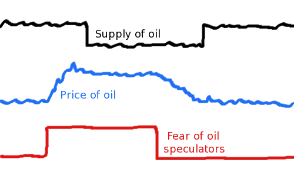

Comic JK 888
When I Feel Like It
⇤
<
?
>
⇥

⇤
<
?
>
⇥
Forum
.
RSS
.
Digg
.
Facebook
.
Reddit
.
Twitter
.
Stumbleupon
Enter your thoughts on number 888 here. Please, no spamming, trolling, phreaking, or jokes about your pony's supply and demand. My dad can supply your anus' demand. >Brother? Is that you? Assuming the speculators know when there will be supply disruptions. With futures contracts and an excess of tankers, supply disruptions are manufactured. >How do people make money by not delivering oil? Can I get in on the not-delivery business? >>Because by not delivering, they can create an artificial shortage >>It's easy to get in - just buy an oil tanker. >>1) Half Supply 2) Triple Price 3) ??? 4) PROFIT! >>>Step 3 seems unnecessary in this case. >>>>This doesn't work. Once you try to sell the supply you were holding back, the price will fall again. >>>>>If you sell half the supply at triple the price, you will get 150% of what you'd get by selling the whole supply at normal price. Does "Fear of oil speculators" mean that the oil speculators fear something - or that someone fears oil speculators? >At first I thought it was obviously the latter, making this a poke at the whiners. But on further thought, it follows perfectly that it be the former. I can't respect anyone who believes that the price of oil will go down and supply will go up in the average long term. >Of course not - I would think it would happen as it always has in the average long term, price and supply will both go up. >> Oil supply cannot go up. Oil is not magically produced - it is mined. >>>The world's supply cannot go up, but the supply on the market can certainly go up. Especially if it was previously driven down by a temporary disruption. >>>>Also because there are still untapped pockets and reservoirs of oil. There is a fixed amount of oil in the world, yes, but we're still finding more. We're also accessing shale oil and other means to produce it. To suggest we've found it all implies that we have much more info on the Earth's detailed composition than we actually do. >try a few of these / rather than }}}} >> Say what? Backslashes disappear and don't work if that's what you tried. >>> Oh I see. If you put a double backslash, it escapes and it will display. But then it only displays 1 backslash, so the next person to post ends up implicitly removing them.